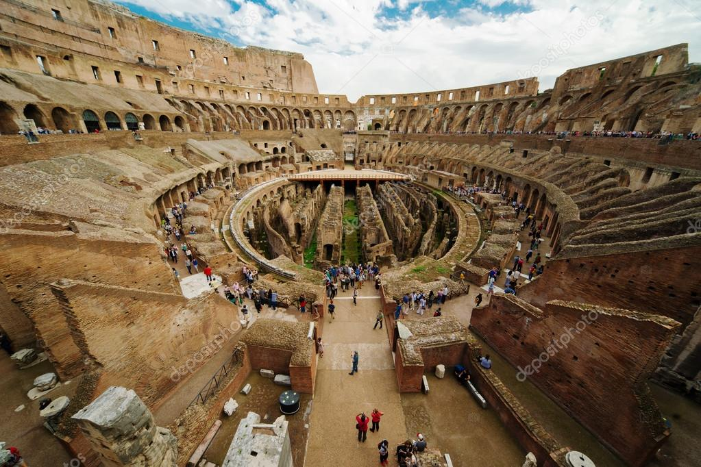
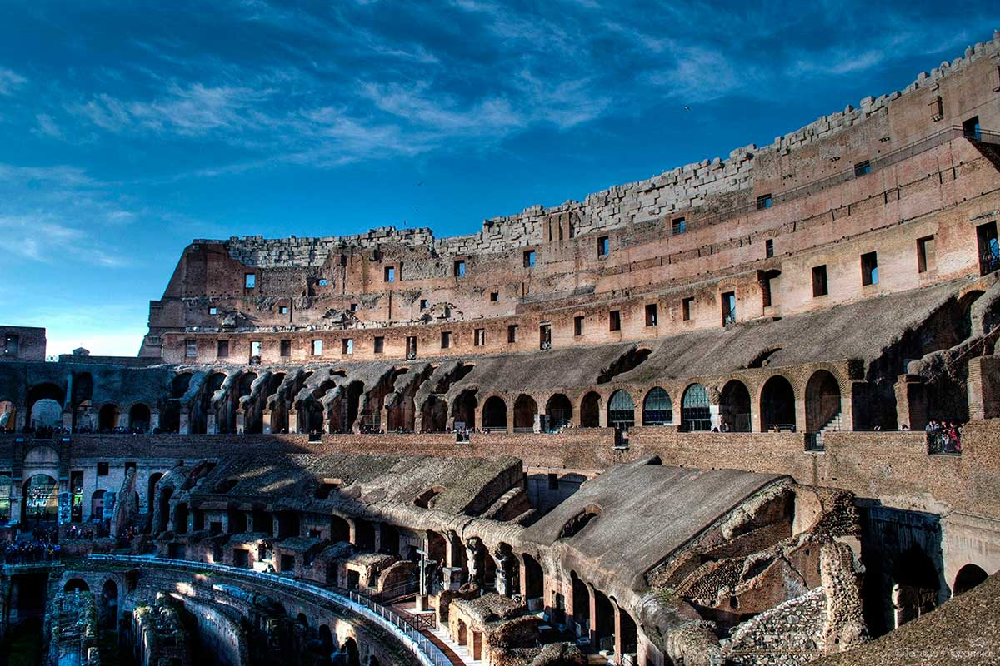
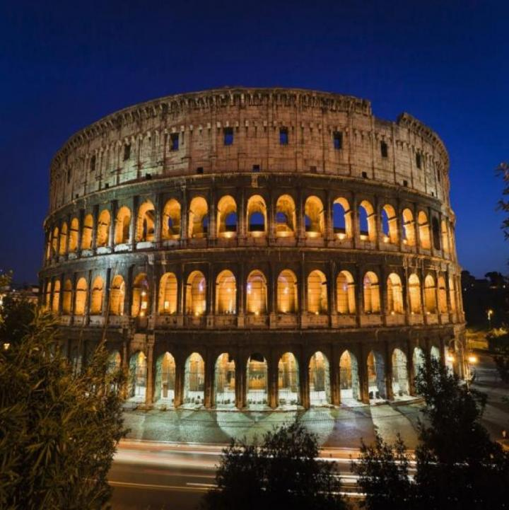
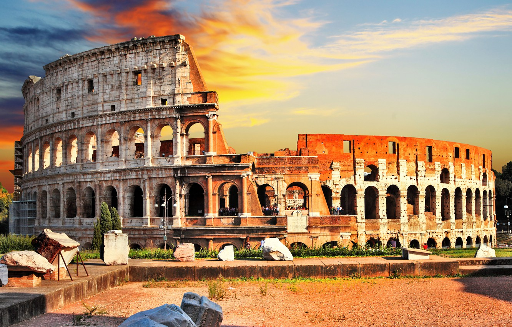

Новый император не упустил из виду потребности римлян в культурных развлечениях. Обширный сад, с прудом, расположенный в столице, Веспасиан приказал превратить в новый центр общественно жизни — амфитеатр. Началом строительных работ считается конец 71 — начало 72 г. н.э. Плоская территория между тремя холмами Рима: Кайлием (Celio), Эсквилином (Esquilino) и Палатином (Palatino) идеально подошла для этих целей. Столь масштабная стройка требовала колоссальных затрат: материальных и человеческих. Недавно окончившаяся война с иудеями принесла Веспасиану более 100 тысяч пленных рабов, а также необходимые средства. Невольники работали на добыче травертина и строительного камня в 20 милях от Рима под Тиволи (Tivoli), а также тяжко трудились, доставляя материалы в столицу. Амфитеатр был возведен к 80 году н.э. К этом моменту император Веспасиан умер, передав бразды правления своему сыну, Титу (лат. Titus Flavius Vespasianus). Приемник не только построил Колизей в Риме, но отметил окончание строительства пышной церемонией, и освятил его родовым именем — Амфитеатр Флавиев. Постройка вмещала в себя от 50 до 80 тысяч зрителей, имея в своем активе средний показатель — 65 тысяч посетителей. «Репертуар» Колизея составляли гладиаторские бои, морские сражения, бои с участием диких животных, казни, воссоздание исторических баталий и даже театрализованные представления по мотивам древних мифов.
Главная причина разрушения Колизея в Риме – это неоднократные землетрясения и пожары. Римляне хранили и берегли свой главный символ города, но после запрета гладиаторских боев в 404 году н. э. горожане начали терять интерес к арене. Из-за крупных землетрясений в 442 и 486 годах в амфитеатре появились трещины, а в 1349 году после крупнейшего толчка обрушилась южная часть стены. Так как арена давно уже не выполняла своих первоначальных функций, никому не интересно было восстанавливать амфитеатр.

О мероприятии
По пути на форуме, в политическом, социальном и религиозном центре города, можно найти остатки общественных зданий, храмов, священного жилища Весталок и многое другое. Ваш гид увлечет вас историями о политических драмах, которые разыгрывались там, и повседневной жизни людей, которые жили более 2000 лет назад.
О мероприятии